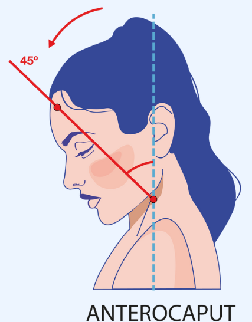
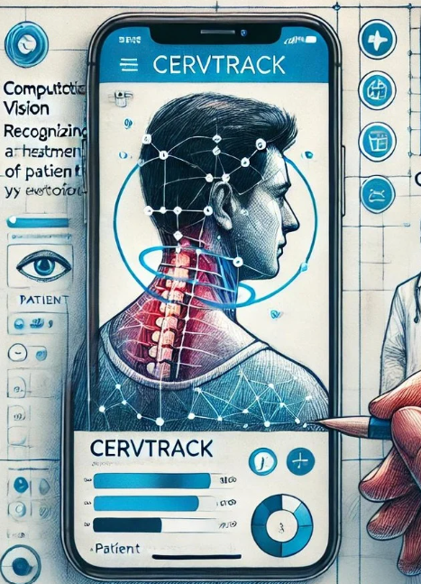
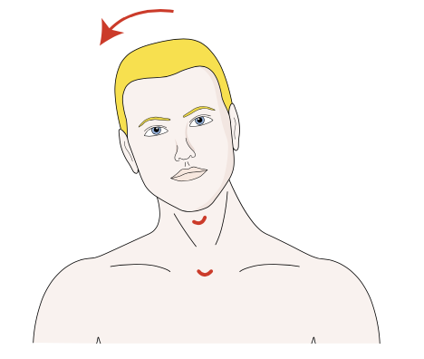

BEM-VINDOS AO CERV-TRACK 🩺
Monitoramento da Distonia Cervical
O CervTrack é um aplicativo inovador projetado para avaliar e monitorar continuamente o tratamento de pacientes com Distonia Cervical. Utilizando técnicas avançadas de visão computacional, mede a evolução física dos pacientes, focando nos desvios de cabeça e pescoço.
Entre em Contato

Serviços
Como podemos ajudar?

Visão Computacional
Medição automática dos desvios de cabeça e pescoço com técnicas avançadas de visão computacional e I.A., permitindo a comparação ao longo do tempo.

Inovação e Impacto
A nossa missão é impactar e inovar suas vidas!
O CervTrack revoluciona o acompanhamento da Distonia Cervical, ajudando médicos e pacientes a alcançar melhores resultados no tratamento e melhorar a qualidade de vida.